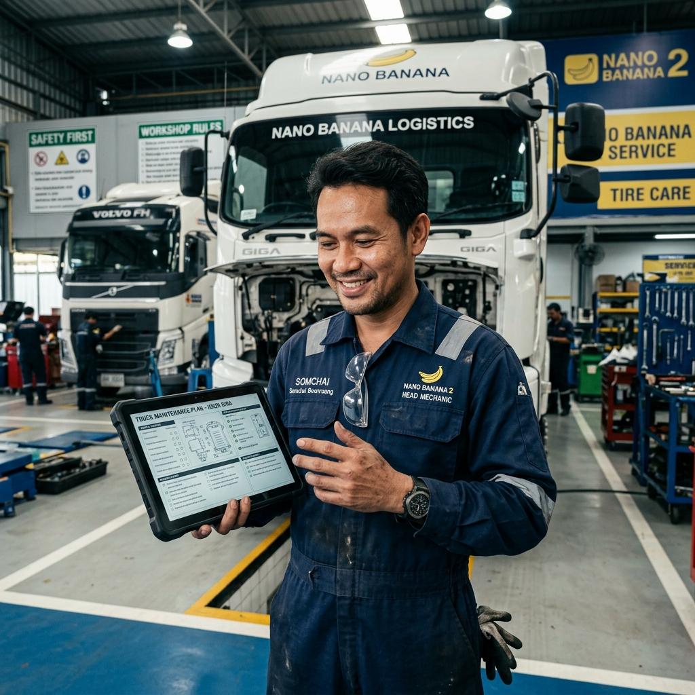
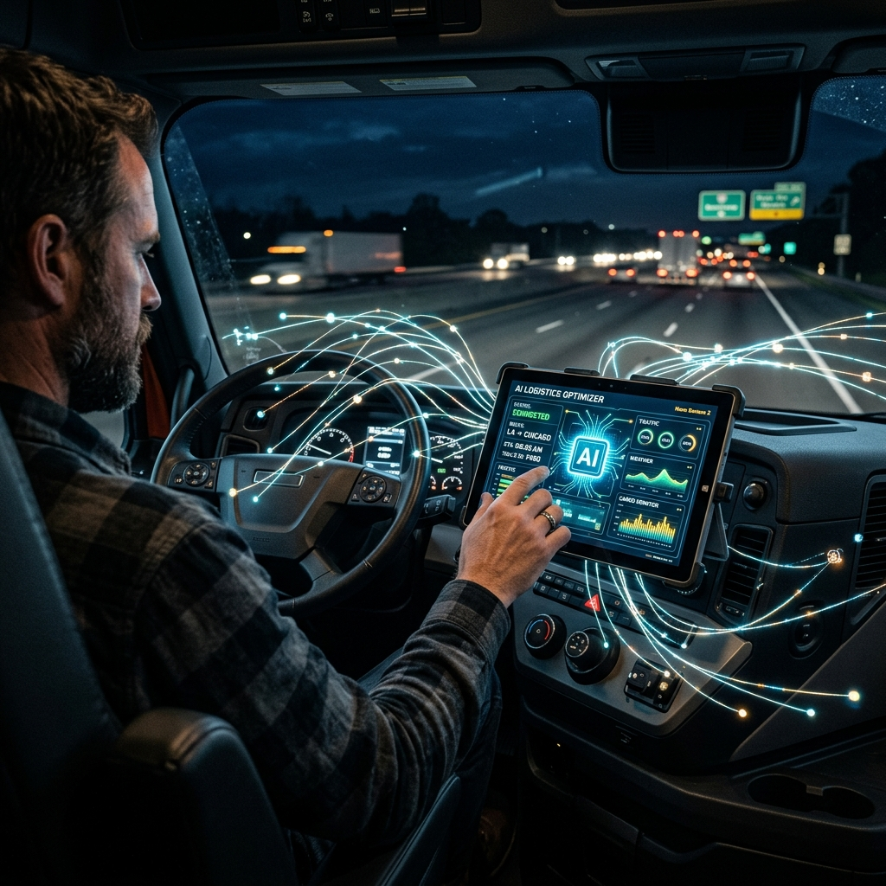

ยกระดับธุรกิจขนส่งของคุณด้วยแพลตฟอร์มควบคุมรถครบวงจร ทำงานร่วมกับ HiClaw AI Agent Team ที่วิเคราะห์ข้อมูลและให้คำแนะนำแบบ Real-time ตลอด 24 ชั่วโมง
ยกระดับการจัดการด้วยโครงสร้าง Manager-Worker แบบอัตโนมัติ ผู้บริหารสั่งงานผ่านแชท ส่วน AI Workers จะแบ่งหน้ากันไปดึงข้อมูลและทำรายงานให้คุณทันที
ดูแลภาพรวม KPI มอบหมายงานให้ Workers ฝ่ายอื่น ประมวลผลและตัดสินใจเรื่องสำคัญ พร้อมสรุปอัปเดตสถานะแบบจบในแชทเดียว
47 Toolsดูแลข้อมูลทะเบียนรถ คนขับ จัดเที่ยววิ่ง คำนวณรายได้-รายจ่าย และติดตาม GPS ช่วยคุณตัดสินใจด้านเส้นทางได้ทันที
20 Tools
รับผิดชอบสร้างใบแจ้งซ่อม ตรวจสอบระยะทางการซ่อมบำรุง เช็คสต๊อกอะไหล่พัง/ต่ำกว่ากำหนด และระบบแจ้งเตือนต่อภาษีประจำปี
12 Toolsรับการจองรถ หารถว่างประเมินจุดหมาย คำนวณราคาขนส่ง ตรวจเช็คสถานะส่งของ (POD) และรองรับการหารถร่วมบริการให้ลูกค้า
15 Toolsเปรียบเทียบกับระบบ Fleet Management ทั่วไป — SML Fleet ให้ AI ทำงานแทนคน ลดต้นทุน เพิ่มประสิทธิภาพ
Event-Driven + AI-First Architecture — ข้อมูลไหลตั้งแต่ Driver App จนถึง AI Analysis
Write Path: ทุก operation เขียน MongoDB ก่อน (Source of Truth) → Kafka produce event → Consumer upsert PostgreSQL
Read Path: ทุก query อ่านจาก PostgreSQL (เร็ว, JOIN ได้)
Rebuild: PostgreSQL สามารถ DROP แล้ว rebuild จาก MongoDB ได้ทุกเมื่อ — ข้อมูลไม่มีวันหาย
Infinite Task: fleet-ops ทำงานทุก 1 นาที เรียก get_moving_vehicles ตรวจจับรถเปลี่ยนตำแหน่ง
AI Analysis: วิเคราะห์ 8 event types: speeding, geofence, night movement, erratic driving ฯลฯ
Auto Alert: severity warning/critical → Kafka → สร้าง alert ใน PostgreSQL อัตโนมัติ
shop_id: ทุก document, ทุก table, ทุก query มี shop_id — แยกข้อมูลลูกค้าสมบูรณ์
JWT Auth: Token-based authentication + role-based access (admin, driver, manager)
Higress Gateway: AI requests ถูกกรองผ่าน Gateway — consumer auth, rate limit, token control
Road-following polyline: เส้นทางตามถนนจริง ไม่ใช่เส้นตรง — วาดบน OpenStreetMap
Turn-by-turn: คำแนะนำเลี้ยวทุกจุด ภาษาไทย สำหรับ Driver App
Upgrade path: พร้อมอัปเกรดเป็น Valhalla self-hosted (map matching, isochrone, truck profile)
Event Sourcing: ทุก action มี event log — ย้อนดูว่าใคร ทำอะไร เมื่อไหร่ ได้ทั้งหมด
11 Topics: vehicles, drivers, trips, maintenance, partners, expenses, gps, alerts, parts, event-logs, movement.analysis
Consumer Groups: pgsql-sync, alert-processor, bc-account-sync
47 MCP Tools — AI เรียกใช้ได้ทุก function ของระบบ
60+ REST APIs — ครอบคลุมทุก entity: vehicle, driver, trip, maintenance, partner, expense, GPS
11 MongoDB Collections + 8 PostgreSQL Tables + 2 Views
8 Movement Event Types — speeding, geofence, night, erratic, idle, route deviation ฯลฯ
AI Workers เรียกใช้ Tools เหล่านี้ผ่าน Higress Gateway — ทุก Tool เชื่อม API จริง ไม่ใช่แค่ Chatbot ตอบคำถาม
จัดการทะเบียนรถครบวงจร ตั้งแต่ลงทะเบียนจนถึงวิเคราะห์ต้นทุน
ตัวอย่าง: "รถทะเบียน กท-1234 สุขภาพเป็นอย่างไร" → AI เรียก get_vehicle_health → ตอบ เขียว/เหลือง/แดง พร้อมรายละเอียด
ข้อมูลคนขับ KPI ตารางเวร เงินเดือน แนะนำคนขับที่เหมาะ
ตัวอย่าง: "คนขับสมชาย KPI เท่าไหร่" → AI เรียก get_driver_score → ตอบ 92/100 ตรงเวลา 95% น้ำมัน 5.2 km/L
จัดเที่ยววิ่ง มอบหมาย ติดตาม คำนวณต้นทุน/กำไร + เส้นทาง OSRM
ตัวอย่าง: "คำนวณเส้นทางเชียงใหม่ไปลำพูน" → AI เรียก calculate_route → ตอบ 35.4 km, 35 นาที พร้อม polyline ตามถนน
ใบสั่งซ่อม อนุมัติ ปิดงาน สต๊อกอะไหล่ ต้นทุนซ่อมต่อคัน
ตัวอย่าง: "รถคันไหนใกล้ถึงกำหนดซ่อม" → AI เรียก list_maintenance_due → ตอบรายการพร้อมวันที่/กิโลเมตร
ตำแหน่ง GPS real-time + AI วิเคราะห์รถเคลื่อนที่อัตโนมัติทุก 1 นาที
ตัวอย่าง: ทุก 1 นาที fleet-ops เรียก get_moving_vehicles → พบรถขับเร็ว 120 กม./ชม. → AI วิเคราะห์ severity: warning → publish_movement_analysis → Kafka → auto alert
รถร่วม ค่าใช้จ่าย KPI สรุปภาพรวม รายงาน อันดับคนขับ
ตัวอย่าง: "สรุปภาพรวมกองรถวันนี้" → AI เรียก get_fleet_summary → ตอบ รถ active 80 คัน, เที่ยวสำเร็จ 45, รายได้ 185,000 บาท
ทุก case แสดง MCP Tools ที่ AI เรียกใช้จริง — ถามจนครบ ยืนยันก่อนทำ

AI Chatbot ทั่วไปทำได้แค่คุยและให้คำปรึกษา แต่สำหรับ SML Fleet เราเชื่อมต่อ LLMs เข้ากับระบบ API ผ่านมาตรฐาน MCP ทำให้ AI กลายเป็น "ผู้ปฏิบัติงานจริง" (Agent) ที่เชื่อมตรงเข้าสู่ Database ของบริษัท
ทุกครั้งที่แชทสั่งงาน AI จะวิเคราะห์เจตนาและทำการเรียกใช้ API หนึ่งในกว่า 47 Tools แบบอัตโนมัติ เช่น สั่งค้นหารถว่าง หรือเพิ่มตารางคนขับเข้าสู่ระบบ
ทุกๆ คำสั่งจะถูกกลั่นกรองความปลอดภัยและแปลงสภาพผ่านระดับ Gateway ทำให้ระบบ Backend มั่นคง และสามารถทำงานกับ LLM หลากหลายค่ายได้ทันที (OpenRouter, Gemini, Claude)
นอกจากการคุยแบบถาม-ตอบ MCP ทำให้ผสานรวมเข้ากับระบบ Event-driven ตรวจจับข้อบกพร่องของ GPS Fleet ตลอด 24/7 เพื่อให้ AI สรุปเหตุการณ์ที่ผิดปกติแจ้งคุณได้ทันที
สัมผัสประสบการณ์ใช้งานระบบ SML Fleet ที่ถูกออกแบบมาสำหรับ User ทุกระดับในองค์กรของคุณ
ระบบหน้าจอใหญ่สำหรับพนักงาน — ค้นหาลูกค้า จองรถ ติดตาม GPS จัดการทุกอย่าง เข้าถึงทุกข้อมูลขององค์กร
พนักงาน Call Centerศูนย์กลางสำหรับประสานงาน ระบบทะเบียน จัดการอะไหล่ ซ่อมบำรุง ตารางงาน และการเงิน
ผู้ใช้งาน: แอดมิน / ฝ่ายบัญชีแอปพลิเคชันดูข้อมูล KPI กำไร/ขาดทุน แผนที่เดินรถ real-time และอนุมัติเอกสารง่าย ๆ จากมือถือ
ผู้ใช้งาน: เจ้าของธุรกิจ / ผู้จัดการรับแผนการวิ่ง เช็คลิสต์สภาพรถ อัปโหลดรูปใบชั่ง บันทึกรายจ่ายน้ำมันและเก็บลายเซ็น POD
ผู้ใช้งาน: พนักงานขับรถลูกค้าตรวจสอบสถานะส่งของผ่าน LINE — ระบบแจ้งเตือนอัตโนมัติเมื่อรถออก / ใกล้ถึง / ส่งมอบสำเร็จ พร้อมรูป POD
ลูกค้า — ตรวจสถานะผ่าน LINEเข้าถึงข้อมูลเชิงเทคนิค สถาปัตยกรรมระบบ API Reference และ UCP Protocol Setup
Developer & Integratorนอกจากโหมดตอบคำถามแบบ Chatbot มีฟังก์ชัน Auto-start / Auto-stop Workers เมื่อมีเหตุการณ์สำคัญเกิดขึ้นในระบบ
ตรวจสอบรถที่ติดตั้งระบบด้วยกฎ Monitoring Parameters ตบอดเวลาในระดับ Background
คำนวณระยะทางและเส้นทางพาดผ่านที่สมจริง ไม่ใช่เส้นตรง
จัดเก็บตัวถัง ประวัติซ่อมบำรุง ประกันภัย ภาษี มีไฟเขียวแจ้งเตือนล่วงหน้า
รู้รายได้และต้นทุน (น้ำมัน, ค่าแรง, ทางด่วน) ของแต่ละเที่ยวแบบเป๊ะๆ
หารถขนส่ง Outsource ที่เข้าร่วมอย่างเป็นระบบ ทำบิลหัก ณ ที่จ่ายครบถ้วน
Event-driven architecture + AI Agent